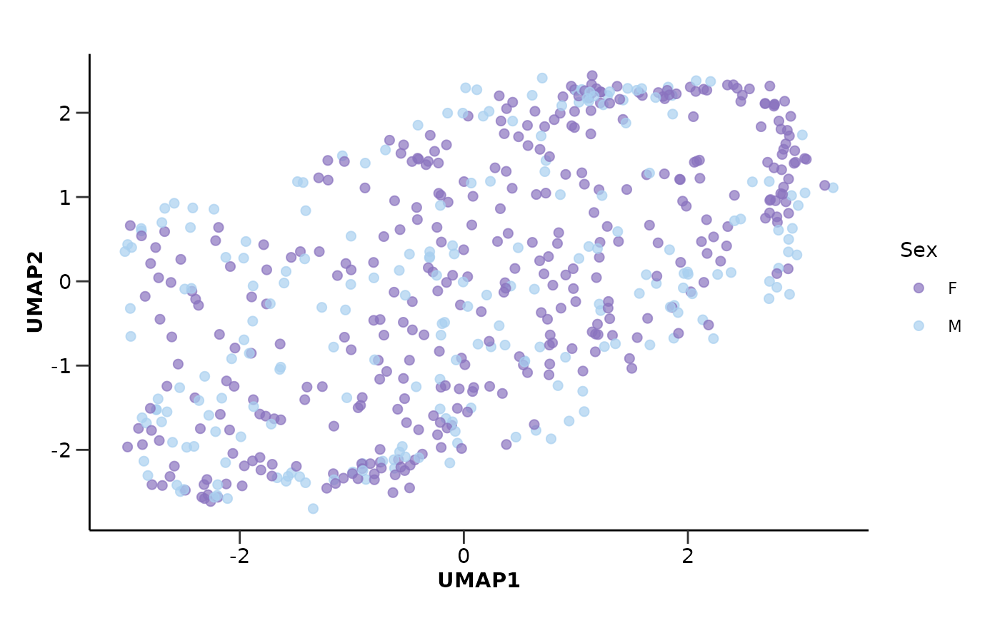

do_umap() runs a UMAP analysis on the provided data. The function can visualize
the sample points on the first and second UMAP plane. It can also save the plots
in the results directory.
Usage
do_umap(
olink_data,
metadata = NULL,
color = "Disease",
palette = NULL,
wide = TRUE,
impute = TRUE,
plots = TRUE,
save = FALSE
)Arguments
- olink_data
A tibble with the data to be used in the UMAP analysis.
- metadata
A tibble with metadata information to be used in the UMAP plots. Default is NULL.
- color
The name of the column in
metadatathat contains the variable. to be used to plot the points color. Default is "Disease".- palette
A vector with the colors to be used in the UMAP plots. Default is NULL.
- wide
If TRUE, the data is assumed to be in wide format. Default is TRUE.
- impute
If TRUE, the data is imputed before the UMAP analysis. Default is TRUE.
- plots
If TRUE, the function creates plots of the UMAP results. Default is TRUE.
- save
If TRUE, the plots are saved in the results directory. Default is FALSE.
Value
A list with the UMAP results and, if requested, the UMAP plots.
umap_res: A tibble with the UMAP results.
umap_plot: A ggplot object with the data points on the 1st and 2nd UMAPs plane.
Examples
do_umap(example_data,
metadata = example_metadata,
wide = FALSE,
color = "Sex",
palette = "sex_hpa")
#> $umap_res
#> # A tibble: 586 × 3
#> DAid UMAP1 UMAP2
#> <fct> <dbl> <dbl>
#> 1 DA00001 -2.27 0.203
#> 2 DA00002 1.58 -2.09
#> 3 DA00003 -1.29 2.38
#> 4 DA00004 -1.72 2.48
#> 5 DA00005 -2.62 0.372
#> 6 DA00006 1.53 -2.44
#> 7 DA00007 -3.00 1.65
#> 8 DA00008 1.86 0.713
#> 9 DA00009 -0.807 -0.0701
#> 10 DA00010 1.44 -2.25
#> # ℹ 576 more rows
#>
#> $umap_plot

#>